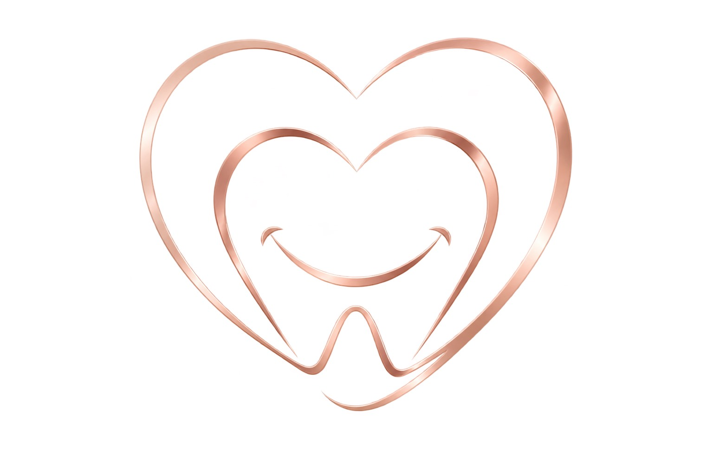
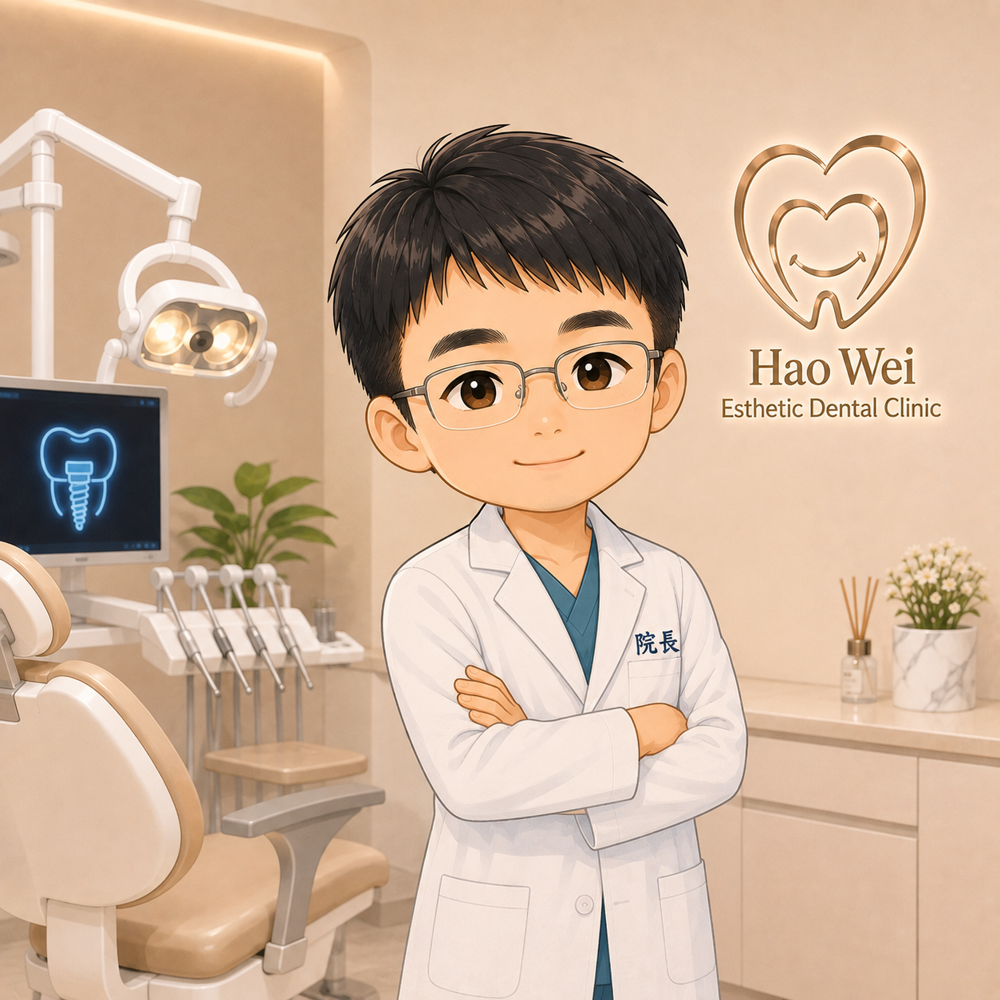
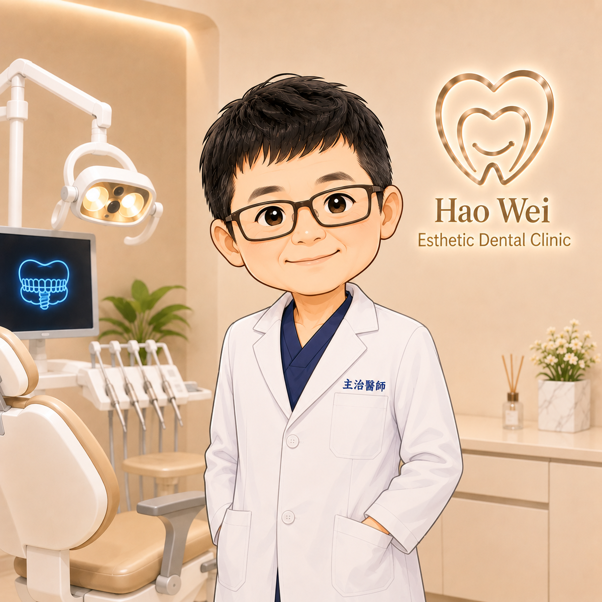
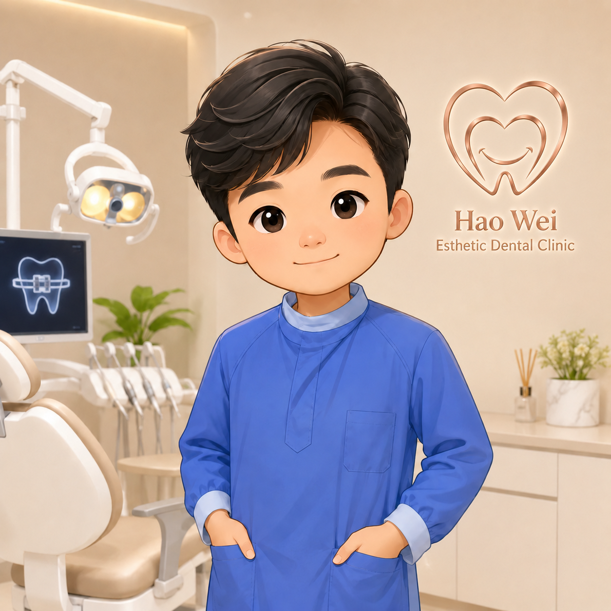

恏微美學牙醫診所我們提供一個靜謐、專業的醫療空間。結合數位科技與美學思維，為您量身打造最合適的口腔治療計畫。
立即預約諮詢國定假日門診時間調整公告，敬請提前預約排程。
運用 3D 電腦斷層輔助精準定位，傷口小、恢復快，重建穩固咀嚼功能。
客製化透明牙套，舒適美觀，在不知不覺中將牙齒排列至完美弧度。
全瓷冠與超薄陶瓷貼片，改善牙齒型態與色澤，還原自然透亮的笑容。

專長：植牙｜矯正｜牙周｜貼片｜美學贗復

專長：活動假牙｜固定假牙｜一般牙科

專長：矯正｜假牙贗復｜植牙｜一般牙科
| 時段 | 週一 | 週二 | 週三 | 週四 | 週五 | 週六 | 週日 |
|---|---|---|---|---|---|---|---|
| 早診 10:00 – 12:30 | 休診 | ||||||
| 午診 14:00 – 17:30 | 休診 | ||||||
| 晚診 18:00 – 21:30 | 休診 | 休診 |